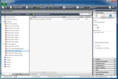
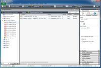

|
This page last changed on Mar 22, 2012 by yannph.
I'd like to review with you the KNX import feature
The KNX import is a major step ahead with the new designer but I find it very heavy to use and would like to check with you if we could simplify and improve it. So please don't hesitate to comment, complete this thread with your ideas, wishes, comments, ...
Some suggestions:
- within the group address list, we have to select one by one the command that we want to import. Could we add a select all / unselect all boxes?
- could we add the ability to select multiple rows in the group adress list and when we're selecting 1 type in the drop down, automatically populate the other selected rows with that same values? Like this we could think about importing by group of KNX items.
- creating a new import value to create Switch and Sensor at once. Currently you have to select all your switches, one by one, select them and ask for switch creation. Once done, you've to reselect them and one by one request the Sensor creation .... What a number of clicks. (does that make sense since in KNX the feedback should be in another group adress than the actions?)
- disabled the group adress from the import list if the group adress is already in the command list of the designer
- why not having "default" association between the DPT (if defined in ETS) and the Command Type. I.E: DPT1.001 = SWITCH + STATUS, DPT9.001=Custom and if we don't want, we simply have to unselect somes instead of seelction all from scratch.
Regards
|
Thanks for your suggestions. I will look into this and see what we can do.
The wizard needs to be more user friendly 
Regarding the "default" association between DPT and "Command type", we face the problem that I can see that it is a DPT1.001 and should be a switch but I cannot see if this group address is performing an action or returning the status. I was looking at the ETS and it would be possible to use the group address description property in ETS to enter extra information which we could use in OpenRemote.
If we would use that description field we could even enter the related switch group address and then create all needed OR objects automatically (action command, status command, sensor, switch). But this would mean we kinda misuse the field in ETS. I have attached 2 examples where you can see my suggestions on the right side in the property area. We would only need to set a value at the group address of the action and we would define what type that is and which group address is the related status.
This way we would be able to configure everything in ETS and the import hardly needs any user interaction.
What do you think?



Posted by mredeker at Apr 04, 2012 09:16
|
|
Marcus,
Yes I understand the point and don't have a easy answer to that.
My thoughts:
- If we can improve the UI with multiple selection/edit, at least, we'll be able to select the group os switch, define the type of the group in one go. That we'll be already a major step and could reduce/cancel the need of auto-mapping.
- I don't think using description field is a good idea. As you've said, this field could be used for some "user friendly" needs in ETS. What I've personnaly doneis to "dedicate" sub KNX group to a specific usage. I.E: 0.1.x are all the switchs when 0.2.x are all the status (inline with the switch numbers), 0.3 are all Dim switch when 0.4 are all status related to the DIM, ... So basically, my odd subgroup are "write" when the pair subgroup are "read" commands. But this convention is a personal one and maybe can't fit with all needs.
- Another solution, if the ETS is correctly done, is to referred to the type of commands associated to the objects. There you can know if it's R/W or simply R. Bit this could be more challenging in the ETS file.
So, I'll simply recommend the UI improvement.
I've seen some intelligent ETS import in other tool like LifeDomus. Don't know how it's done, but maybe could we get some good ideas. I'll try to recover the URL.
Regards
Posted by yannph at Apr 04, 2012 17:36
|
|
I did not find any video or anything that would show an import into LifeDomus. If you can find that again, that would be cool.
I only found something on Youtube that shows a manual definition of group addresses.
Posted by mredeker at Apr 10, 2012 11:06
|
|
I'm a new OpenRemmote user; just installed it yesterday and give it a first try. I have 251 groups in my KNX installation, so I was about to post about improvements in ETS import and I saw that topic from Yann Philippe. And my request is exactly the same as Yann's 3 first points :
1/ select all / unselect all
2/ assign one type to all selected rows
3/ an "OpenRemote format" of CSV to import : user have to create that CSV by himself (using excel or whatever CSV editor) and including EVERYTHING needed (including switch/sensor définition), so user would import everything in ONE click (after spending some time in Excel to create that OpenRemote CSV).
Would it be something we can see in future release ? or too complicated, or too few users interresting (I don't know how many users use KNX protocol over the others protocols offered by OR).
Posted by pengu at Feb 10, 2013 10:06
|
|
Improvements will come But time is limited and we currently work towards documentation and stability for the Pro release.
Posted by mredeker at Feb 10, 2013 10:19
|
|
{kind=link}
{kind=link}
{kind=link}
{kind=link}